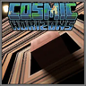
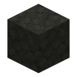
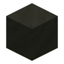

Getting to the planets#
Vormir, Morag, Svartalfheim and the Garden have no portal blocks. You get there with the Space Stone or with a rocket from a space mod.

Unlock Teleport GUI, type the dimension ID and some coordinates, and walk through. The dimension field suggests every dimension the server has. Works without any other mod.
The planets are in Ad Astra's planet list. You need a Tier 4 rocket to reach them, like Ad Astra's own far planets.

The mod adds a Marvel solar system to Cosmic Horizons with the Garden, Vormir, Morag and Svartalfheim in it. Fly your ship there and land on the planet you want.
Dimension: infinity:vormir X: 212 Y: 130 Z: 99 (the Soul Guardian)
Dimension: infinity:morag X: 0 Y: 120 Z: 0
Dimension: infinity:svartelheim X: 0 Y: 120 Z: 0
Dimension: infinity:garden X: 0 Y: 100 Z: 0Portals always drop you on safe ground near the coordinates, so a rough Y is fine. Operators can also just use
/execute in infinity:vormir run tp @s 212 130 99.
Vormir#
infinity:vormir. Ground made of  Vormir Sand and
Vormir Sand and  Vormir Stone, no sky light, sea level 63.
Vormir Stone, no sky light, sea level 63.
The Soul Stone's planet. Vormir's Edge and the Soul Guardian are always in the same place, roughly X 0 to 271 and Z 0 to 191, with the
Guardian at 212 121 99. See Structures and Soul Stone.
Morag#
infinity:morag. Ground made of  Morag Stone, no sky light, sea level 100.
Morag Stone, no sky light, sea level 100.
A flooded planet. The Morag Temple with the Orb is on the ocean floor, a long way from the origin, so bring water breathing (the Space Stone has it).
Svartalfheim#
 infinity:svartelheim. Ground made of
Home of the Dark Elves. Uru meteor craters are all over the surface, and the Aether Chamber is buried near the bottom of the world.
The Garden#
infinity:garden. Normal day and night, with garden, plains and river biomes.
The quiet farm planet where Thanos retires. Beds and respawn anchors work and raids can happen. There are no stones or structures here, it's somewhere to go once it's all over.
The Soulworld#
infinity:soulworld. A flat world of smooth red sandstone under a thin layer of water. It's always noon.
- Getting in: the Soul Stone's Enter / Exit Soulworld (you and everything within 5 blocks, at Y 72), the Snap (hostile mobs and other players) or Destroy Stones.
- Getting out: Exit Soulworld sends everyone back where they came from. If you don't have that, walk to X 0, Z 0. There's a 5 × 5 shaft straight down to an End portal at the bottom of the world.
- The Snap cell at
1000 78 1000is a lit bedrock room with an oak door on the south side. Snapped mobs and players end up inside it. - Anything sent back by Exit Soulworld that didn't come in through Enter Soulworld lands in the Overworld above the same X and Z, with slow falling.
Marvel (space)#
infinity:marvel. An empty space dimension used for the Marvel solar system in Cosmic Horizons. You aren't meant to go there
without it.